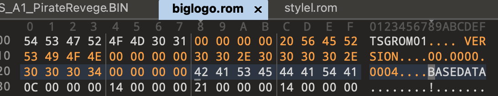

Embedded Architecture Analysis
IGS’s anti-piracy technology isn’t particularly hard, but it’s extremely weird—probably because the code quality is terrible.
IGS E2000 is essentially a combination of PC + game baseboard (designed by Advantech). It has to consider both Anti-Copy and software-engineering reuse. The ASIC is basically a completely black-box compute module: putting the game’s key logic inside it both improves performance and makes cracking harder.

Main Program Flow Analysis
The game’s main program allocates a stack frame of 0x200034, where the buffer alone takes 0x200000. And after allocating this stack, it never restores it. This causes IDA Pro to fail to decompile—no idea if this is intentional.

The workaround is to patch the buffer size, shrink the function stack frame, undefine the function, and then re-identify it; then it can be decompiled successfully.

- During
mount_rootin the kernel and when the game starts, it verifies BIOS version info. The developer claimed it was “getting a CRC result”, but I searched everywhere CRC appears and couldn’t find any CRC computation logic related to anti-piracy at all. - If BIOS validation fails, it then checks PCI driver information. If that fails, it seems to do nothing—but many identical validation stubs are inserted elsewhere, and failure there will block execution.
- System initialization: display, audio, graphics, text, language, ASIC, timer, PLXPCI, game, music, controllers, camera, bookkeeping, control, coin, mixer, etc.
- Refresh the ASIC 4 times, why???
- Load the base action file (TSGROM format); each load refreshes the ASIC once.
- Game version validation, show the first screen, load fonts, load sounds.
- Load the card reader.
- Game loop: 4 states (Game, Test, Setting, Demo), controllable via the ASIC.

The game was developed with SDL 1.2.7. SDL (Simple DirectMedia Layer) is a cross-platform multimedia development library, mainly providing low-level access to audio, input devices (keyboard/mouse/gamepad), and graphics hardware. However, its performance is relatively low and is only suitable for 2D games. Percussion Master 2008 is a 2D game. Speed Driver 2 is a 3D game, so the difference between the two may be significant.
At every place in the main program where it interacts with the ASIC, the developer inserted a stub; I’ll temporarily call it RealTimeEvent. It should be a unified event handler: every logic change and animation change requires refreshing events. It’s used to implement various complex control functions and also bundles some anti-piracy behavior. Honestly, the code quality is awful—each call does a lot of computation, performance is poor, and it feels like building a SPA in pure JS + HTML.
Logic of the state-check stub:
- Update clock
- Timer check
- Action handling
- Music handling
- Audio handling
- Key status and control input
- Bookkeeping
- Coin handling
- PLX PCI status handling
- SDL event handling
- Draw dynamic pentagon animation
- PCI control write
- ASIC 27 command write
- PCI data read
- Graphics refresh
Region Initialization
Percussion Master 2008 supports 7 regions and 3 languages: Simplified Chinese, Traditional Chinese, and English.

ROIO BIOS Info Verification
The kernel runs a driver /dev/roio. The game compares it against a built-in version info table to perform validation. Both the kernel and the game embed tables. The likely workflow is that the developer parsed BIOS information using some tooling and then hard-coded physical offsets into both the game and the kernel.

The BIOS info table structure differs slightly between kernel and main program. The kernel uses 4-byte alignment, but the underlying idea is the same.
Game BIOS table:
struct bios_item {
unsigned int index; // index
unsigned char table_cmp_max_count;
unsigned int value_addr; // base addr 0xC0000000
unsigned char char_cmp_max_count;
unsigned int name_addr;
}
Kernel BIOS table:
struct bios_item {
unsigned int index; // index
unsigned int table_cmp_max_count;
unsigned int value_addr; // base addr 0xC0000000
unsigned int char_cmp_max_count;
unsigned int name_addr;
}
The comparison logic is also very simple:
Step 1: iterate the program’s built-in BIOS table to get the version string address, the target string physical address, iteration counts, etc.
Step 2: perform an IOCTL call to /dev/roio to compare the specified offset within System ROM against the program’s built-in string. If any single character matches, it passes. That’s unbelievably dumb.
This kernel only allows running on 4 motherboard variants, but the game allows running on more devices, so it needs to validate whether the main program, kernel, and motherboard match. This is an anti-piracy mechanism—just patch it out.
After statistics, the addresses and version strings are as follows; all addresses start from 0x0f0000.
# Kernel + Game
0x0F086E i852-W83627HF
0x0FEC7C i852-W83627HF
0x0FEC8A 6A69YILTC-00
0x0FECDE Ph6A69YILT
# Game
0x0FE0C1 L4S5MG3
0x0FEC84 6A6IXE19C-00
0x0FECDF I6A6IXE19
0x0FE0C1 L4S5MG/651+
0x0F006D nVidia-nForce
0x0FECDE Ph6A61BPA9
0x0FEC8A 6A61B_00C-00
0x0FECDE Ph6A61B_00
Next is the ROIO driver. Most of its code has hidden anti-copy stubs and uses XOR. The performance impact is minimal, and it prevents copying game A’s program into game B’s system.
- Input mask:
0x1FB8408E - Return mask:
0xC2E83AB8

ROIO has three magic numbers:
0xfc: read 32-bit value at target address, little-endian0xfd: read 32-bit value at target address, big-endian0xfe: read 8-bit value at target address
Finally, XOR with 0xC2E83AB8.

Here data is used as an offset. The base is 0xc0000000, and it adds the BIOS info value because x86 uses paging, so CPU memory access goes through virtual addresses. Linux i386 virtual address offset definitions are:
#define __PAGE_OFFSET (0xC0000000)
#define __pa(x) ((unsigned long) (x) - PAGE_OFFSET)
#define __va(x) ((void *)((unsigned long) (x) + PAGE_OFFSET))
From IOMEM mapping, you can also see the BIOS info address is located in System ROM:
# cat /proc/iomem
00000000-0009fbff : System RAM
0009fc00-0009ffff : reserved
000a0000-000bffff : Video RAM area
000c0000-000c7fff : Video ROM
000f0000-000fffff : System ROM
00100000-1feeffff : System RAM
00100000-0050aab5 : Kernel code
0050aab6-006f8f27 : Kernel data
1fef0000-1fefffff : reserved
1ff00000-1ff003ff : Intel Corp. 82801DB Ultra ATA Storage Controller
d0000000-dfffffff : PCI Bus #01
d0000000-dfffffff : PCI device 10de:0221 (nVidia Corporation)
e0000000-e7ffffff : Intel Corp. 82852/855GM Host Bridge
e8000000-eaffffff : PCI Bus #01
e8000000-e8ffffff : PCI device 10de:0221 (nVidia Corporation)
e8000000-e8ffffff : nvidia
e9000000-e9ffffff : PCI device 10de:0221 (nVidia Corporation)
eb000000-eb01ffff : PLX Technology, Inc. PCI <-> IOBus Bridge Hot Swap
eb020000-eb02007f : PLX Technology, Inc. PCI <-> IOBus Bridge Hot Swap
eb021000-eb0213ff : PLX Technology, Inc. PCI <-> IOBus Bridge Hot Swap
eb022000-eb022fff : Intel Corp. 82801BD PRO/100 VE (CNR) Ethernet Controller
eb022000-eb022fff : e100
eb100000-eb1003ff : Intel Corp. 82801DB USB2
eb100000-eb1003ff : ehci_hcd
eb101000-eb1011ff : Intel Corp. 82801DB AC'97 Audio Controller
eb101000-eb1011ff : Intel 82801DB-ICH4
eb102000-eb1020ff : Intel Corp. 82801DB AC'97 Audio Controller
eb102000-eb1020ff : Intel 82801DB-ICH4
fec00000-ffffffff : reserved
The BIOS chip package is PLCC 32, and it was successfully dumped with RT809H.

After the system boots, some BIOS ROM data is parsed into memory—not a 1:1 copy—with an offset address of 0xF0000.

PCCard Random Value Check
I truly don’t understand what the purpose of this code is. There’s a “SPY” keyword in the driver code; maybe it’s a hidden stub intended for anti-sniffing? It’s triggered when launching the program, initializing the game, and printing logs. If the BIOS check above fails, this check is also triggered. It requests /dev/pccard0 via ioctl—either to obtain the result or to not obtain it.

Request 0 list, used for comparing results. The list has 4 members corresponding to related offsets. It randomly selects one of the four, attaches a random number in the range [17, 768], computes locally, sends it to the driver to “execute”, and receives it back. In fact, PCI doesn’t truly participate.
0x64 基址：0xC8000000 设置 SPY_FLAG spy_fixec_func
0x6e 基址：0xD0000000 设置 SPY_FLAG spy_quit_func
0x96 基址：0xA8000000 设置 SPY_FLAG
0xa0 基址：0xB0000000 设置 SPY_FLAG
Request 1 list, length 17:
0xfe,0xc8,0xfd,0xa0,0x96,0x6e,0x64,0xdd,0xde,0xdf,0xe0,0xe1,0xe2,0xe3,0xe4,0xe5,0xe6
It checks whether a value in [1, 255] hits an entry in the list. It tries 5–30 times. If it hits, it decrements the attempt count by 1 and tries again. If it doesn’t hit, it requests via ioctl the offset corresponding to the random value (parameter [17, 768]), and the “magic number” is the matched value. My guess is it might be used to initialize the driver, but I can’t think of any other purpose. Why make it so complicated?

In some place in the game main program, I found leftover code. The XOR constant is 0xD4AA268A. In Percussion Master 2008 I didn’t find any trigger logic; it should be a hidden stub for another game. This makes it more certain that this functionality is for anti-piracy (even though the design is awful).

ASIC 27 Protocol
A27 Initialization
Communication between the game main program and the I/O board goes through the PLX PCI 9030 chip and exchanges data via shared memory.
After game startup and before ASIC 27 initialization, it loads the PCI 9030 driver and allocates a buffer specifically used to store the ASIC buffer, containing various state data. The developer calls it CommandPort.

Next is initializing ASIC 27. It first updates a checksum: it accumulates values such as key sensitivity, key input, light status, system mode, and buffer size located in the buffer, then stores the checksum in two locations in the buffer. Every subsequent ASIC 27 request recalculates the checksum.
It first writes 0x2024 bytes to ASIC 27 with command 0xfe, i.e., directly copying the buffer data into shared memory. After ASIC processing, the shared memory is refreshed, and it will change sm from 0x1c to other values to indicate processing completion.
ASIC will synchronize the game configuration to the OS for updating game settings. It updates the following files:
./pm2_data/storename.dat
./pm2_data/soundset.bin
./pm2_data/gameset.bin
Then it sets sm to 0, updates the checksum once more, and sends it to A27.
System Mode
From analysis, the modes are:
0x0: default mode0x1: ASIC test data read0x2: key test0x3: buzzer test0x4: light board test0x5: coin test0x6: trackball test0x7: SelMode, IGS Logo0x8: Teammark0xc: Coin Page0xf: option0x14: Photo0x10: Song Play0x1a: CCD0x1d: adjust volume
A27 System Mode Write State Machine
Pre-processing before sending data to ASIC. When sm is one of the following values, there is no processing logic and it returns 1:
0x0,0x2,0x3,0x6,0x9,0xa,0xb,0x11,0x12,0x15,0x16,0x17,0x18,0x19,0x1b,0x1c,0x1e
0x1: test data write0x4: light test0x5: coin test0x7: SelMode0x8: Teammark0xc: code removed0xe: code removed0xf: code removed0x10: Song0x13: code removed0x14: code removed0x1a: camera test0x1d: adjust volume
Other values trigger an assert.
A27 System Mode Analysis State Machine
Data returned by ASIC is handled by the game main program. When sm is one of the following values, there is no processing logic and it returns 1:
0x0,0x6,0x9,0xa,0xa,0xb,0x11,0x12,0x15,0x16,0x17,0x18,0x19,0x1b,0x1c,0x1d,0x1e
System Mode handling:
0x1: ASIC test data read0x2: enter key test0x3: enter buzzer test0x4: enter light board test0x5: coin test0x7: load IGS LOGO0x8: load Teammark data0xC: code removed0xE: code removed0xF: code removed0x10: Song0x13: code removed0x14: code removed0x1a: CCD info
Other values trigger an assert.
Key State Machine
press
┌──────────────────────┐
│ │
┌────▼─────┐ release ┌──┴─────┐
│ Idle │────────────►│Released│
│ (0) │ │ (3) │
└────▲─────┘ └──▲─────┘
│ │
│ press │ release
│ │
┌────┴─────┐ long press ┌──┴─────┐
│ Pressed │────────────►│Holding │
│ (1) │ │ (2) │ keep holding, counter++
└──────────┘ └────────┘
Buffer Struct Analysis
The maximum length of the buffer is 8192.
The response header format:
struct g_rBufferRead {
int _dwBufferSize; // 数据大小
int system_mode; // 系统模式
char coin_inserted; // 投币了
char a27_error_flag;
short error_number;
int key_io_list[6];
int8 key_channels;
char pc0;
char pc1;
int16 area_code;
int16 padding_1;
char in_rom_version_name[8];
char ext_rom_version_name[8];
int16 inet_password_data;
int16 a27_has_message; // 决定 a27_message 是否携带数据
char is_light_io_reset;
char pci_card_version;
char bCheckSum1;
char bCheckSum2;
char a27_message[40];
char asic27_buffer[unknown];
}
The request header format:
struct g_rBufferWrite {
int _dwBufferSize; // 数据大小
int system_mode; // 系统模式
int key_input;
int16 trackball_data[4];
char bCheckSum1;
char bCheckSum2;
char lightdisable;
char key_sensitivity;
int lightstate;
int lightpattern;
char data[unknown];
}
A27 Response Checksum
ASIC 27 responses also carry a checksum, which the main program verifies. It is computed by summing the following fields:
a27_has_message + inet_password_data + rd_is_light_io_reset + error_number + asic27_error + coin_inserted + system_mode[0] + buffer_size
Buffer Obfuscation Analysis
Compared to the older version, Percussion Master 2008 added a simple obfuscation layer. The goal is anti-piracy: to avoid running a copied ROM directly. When copying from the buffer into the ASIC 27 buffer, the data is obfuscated.
The obfuscation is triggered only when System Mode matches the following values. Coincidentally, the data for these modes is not pre-processed by the Write state machine.
0x7: SelMode, IGS Logo0x8: Teammark0xc: Coin Page0xd:0xe:0xf: Option0x13:0x14: Photo0x15:
During obfuscation, the program copies asic27_buffer data into dest. Using dest as the source, it processes in blocks. Each block is 0x500 = 1280 bytes. It takes a block, computes a perturbation value based on the first 4 bytes (block header) plus mask_table, and then performs a cyclic reordering of the block data according to that value, finally writing back to the buffer.
v3 = mask_table[v1[0]];
v3 ^= mask_table[v1[1]];
v3 ^= mask_table[v1[2]];
v3 ^= mask_table[v1[3]];
Use v3 to compute an offset. If remaining data is less than 0x500, use v3 % (remaining_length-4) + 4. Otherwise use a fixed v3 % 0x4FC + 4, ensuring the offset range is [4, 0x4FF].
It first copies [v3, end] into the destination, then copies [4, v3). The result is a “rotated” block. The first 4 bytes (header) are not copied in order; instead, they are skipped and then reassembled.
I asked an AI to write a Python implementation.
import random
# size: 0x400
mask_table = [0x00, 0x00, 0x00, 0x00, 0x39, 0x4E, 0xC1, 0xE6, 0x02, 0x19, 0xB1, 0xB9, 0x63, 0xCB, 0xC7, 0x9E, 0xE4, 0xCD, 0x76, 0xE7, 0x23, 0x8D, 0xB3, 0x6B, 0x3F, 0xDA, 0x89, 0xF5, 0x4D, 0xCB, 0x56, 0xB5, 0xD3, 0xA9, 0xBC, 0x2E, 0xA0, 0xE0, 0x80, 0xD6, 0x92, 0x62, 0xDE, 0xC9, 0xFD, 0x24, 0x04, 0x06, 0x4B, 0x70, 0xB2, 0x21, 0x26, 0xD1, 0xB1, 0xAF, 0xA0, 0x29, 0x29, 0x9D, 0x0C, 0x5E, 0x59, 0x09, 0xA2, 0xC9, 0xF3, 0x67, 0x4F, 0xE6, 0xCD, 0x6E, 0xF3, 0x97, 0xF1, 0xF9, 0xD1, 0xE1, 0xCD, 0x26, 0x62, 0x0D, 0xF4, 0x7A, 0x72, 0x98, 0x3C, 0x9B, 0xE2, 0x43, 0xCE, 0x54, 0xF4, 0x44, 0xE9, 0xF5, 0x22, 0xC4, 0x3F, 0xD0, 0x38, 0x5F, 0x96, 0xAD, 0x05, 0xB7, 0x18, 0x47, 0xFE, 0x00, 0x14, 0xED, 0x5B, 0x75, 0x3B, 0xF2, 0x08, 0xA2, 0x44, 0x1E, 0xE5, 0x59, 0x68, 0x4A, 0x36, 0x9E, 0xF6, 0x87, 0x74, 0xAA, 0x70, 0x68, 0x6A, 0x1B, 0xED, 0x84, 0xE9, 0xB2, 0x35, 0xC5, 0x54, 0x83, 0xE8, 0x5B, 0x05, 0xD9, 0x77, 0x9A, 0xD6, 0x20, 0xD9, 0x48, 0xA9, 0x59, 0x18, 0x40, 0xB1, 0x5A, 0x81, 0xC1, 0x96, 0x7B, 0xC7, 0x1F, 0xD5, 0x5A, 0xB1, 0x01, 0x9E, 0xA8, 0x67, 0x52, 0xF4, 0x7A, 0x39, 0x51, 0x80, 0x18, 0xC9, 0x61, 0xEE, 0x01, 0xEC, 0x19, 0x2F, 0x25, 0xBC, 0x74, 0x85, 0x6A, 0x99, 0x92, 0x6A, 0x28, 0x13, 0xF6, 0x9A, 0xED, 0x02, 0x26, 0xF4, 0x69, 0x9F, 0x1E, 0xED, 0xC3, 0x18, 0x0E, 0xBD, 0x32, 0x1F, 0x47, 0x4F, 0x55, 0x8B, 0x91, 0x75, 0xEC, 0x66, 0xC8, 0x83, 0xED, 0x2E, 0x1B, 0x0F, 0xB0, 0x65, 0xEC, 0x87, 0xD3, 0xE0, 0xE2, 0x2B, 0x16, 0xCB, 0x0A, 0x0F, 0x70, 0x64, 0x52, 0xBA, 0x38, 0x6B, 0x5C, 0xEA, 0xFD, 0xA9, 0xB1, 0x8D, 0x8F, 0x26, 0x4B, 0xD9, 0xD3, 0x40, 0x4A, 0x66, 0x33, 0xBB, 0x01, 0xCE, 0x3C, 0x3C, 0x56, 0x14, 0xAE, 0xFD, 0x05, 0x7A, 0x8F, 0x4D, 0x4D, 0x79, 0x29, 0xCC, 0x81, 0xCD, 0x07, 0x43, 0x68, 0x57, 0x0C, 0xDA, 0xDE, 0x79, 0x1D, 0xE0, 0x01, 0x8D, 0x91, 0x17, 0x55, 0x4F, 0xF8, 0x25, 0x60, 0xCE, 0x11, 0x34, 0x3F, 0x3F, 0x03, 0xA3, 0xEF, 0xFA, 0xF5, 0x13, 0xE5, 0xEA, 0x75, 0x6A, 0xD7, 0xE1, 0x65, 0x94, 0x90, 0x42, 0xC9, 0x1D, 0x7F, 0x66, 0xDB, 0x68, 0xB8, 0x18, 0x18, 0x8B, 0x22, 0x49, 0x70, 0x71, 0x88, 0x2D, 0xD9, 0x96, 0x29, 0x4B, 0xAC, 0x7F, 0x58, 0x50, 0x57, 0x0F, 0xDC, 0x4D, 0xB9, 0x53, 0x81, 0x65, 0xD9, 0xB7, 0x85, 0x10, 0xF0, 0xCE, 0x4B, 0x2B, 0xAA, 0x7F, 0x7C, 0x75, 0xBA, 0xB2, 0x01, 0x64, 0x13, 0x07, 0x0A, 0x5E, 0x3F, 0xEF, 0xFA, 0x00, 0x8B, 0x31, 0x89, 0x6A, 0xE9, 0x17, 0x81, 0xC1, 0x4D, 0xEE, 0x31, 0x8C, 0xF0, 0x3A, 0xFD, 0x77, 0x90, 0xDF, 0x7C, 0x83, 0xDF, 0xF9, 0x99, 0xE4, 0xC0, 0xE5, 0x82, 0x22, 0xBD, 0x46, 0xBC, 0xF8, 0x23, 0xE1, 0xDD, 0x48, 0xF3, 0xE1, 0xB0, 0x66, 0x13, 0x93, 0x85, 0xB8, 0xEC, 0x9B, 0xCE, 0x0C, 0xEA, 0xDD, 0x14, 0x42, 0xDF, 0x45, 0x50, 0xAE, 0xC0, 0x60, 0xB2, 0xB7, 0x16, 0xB1, 0xAD, 0x2A, 0x2E, 0x1D, 0xC8, 0xE8, 0xE9, 0xAF, 0x0F, 0x44, 0x5D, 0xC5, 0x80, 0xA6, 0xB2, 0x01, 0xCF, 0xDB, 0x96, 0x49, 0x52, 0xC2, 0xBA, 0x97, 0x36, 0xB0, 0x33, 0x59, 0x88, 0x1D, 0x5A, 0x22, 0xAD, 0xA5, 0x9C, 0xD7, 0x5B, 0x59, 0xCA, 0x83, 0x7D, 0x7B, 0xFA, 0x84, 0x22, 0x65, 0x64, 0x7C, 0xDF, 0xF3, 0xA6, 0x41, 0x49, 0x14, 0x81, 0xED, 0x3B, 0x0C, 0x0A, 0xDF, 0xF6, 0x35, 0x79, 0x98, 0xDC, 0x6A, 0x5D, 0x0E, 0x94, 0x8B, 0x87, 0x5D, 0x0A, 0xEC, 0xFA, 0xC1, 0x6C, 0xE5, 0x01, 0xFD, 0x1E, 0x54, 0x29, 0xB7, 0xC6, 0x26, 0x33, 0x49, 0x60, 0x92, 0x44, 0xD2, 0x0C, 0x1E, 0x84, 0x03, 0x2B, 0x67, 0x82, 0xC3, 0x75, 0x7E, 0x2E, 0x2B, 0xC6, 0x96, 0x6E, 0x8A, 0x5D, 0x27, 0x7A, 0x62, 0x8C, 0xFE, 0x00, 0xCA, 0xFB, 0xFA, 0xD0, 0x9A, 0xB4, 0x60, 0xD1, 0x52, 0xC8, 0xB8, 0x7A, 0x83, 0xA9, 0xAE, 0x2A, 0x14, 0xFE, 0x33, 0xB1, 0x0F, 0xA2, 0x89, 0x25, 0xC1, 0xD5, 0x3A, 0xDE, 0xED, 0x09, 0xE1, 0x49, 0x4A, 0xD7, 0x9F, 0x49, 0xF1, 0x28, 0x88, 0xD1, 0x50, 0x2C, 0x24, 0x4C, 0x09, 0x36, 0x3F, 0x15, 0xD3, 0x1D, 0xA8, 0x1F, 0xE8, 0xAD, 0xC5, 0x5F, 0x95, 0x04, 0xFE, 0x2C, 0x6E, 0xB6, 0x0E, 0xF6, 0x47, 0x4A, 0xF6, 0xAC, 0x5C, 0xBA, 0xD9, 0x35, 0xEA, 0x27, 0x41, 0xF8, 0x84, 0xF2, 0xF8, 0x74, 0x2F, 0xE4, 0xEF, 0x69, 0xC6, 0xC7, 0x4B, 0xEC, 0xD7, 0xEB, 0x83, 0x47, 0xE3, 0x82, 0x74, 0x06, 0xD2, 0x64, 0x1D, 0xEB, 0xCD, 0x7C, 0x74, 0xFC, 0xF2, 0xC9, 0x3F, 0x90, 0x14, 0xDE, 0x1B, 0x25, 0xF8, 0x52, 0xE8, 0x9D, 0xB9, 0x11, 0x0A, 0xEC, 0xA5, 0x59, 0xEA, 0x5C, 0x7E, 0x7D, 0x33, 0x79, 0xEA, 0x26, 0xF6, 0x06, 0x23, 0x4D, 0x67, 0x26, 0x88, 0x12, 0xFE, 0x13, 0x9A, 0xE9, 0x66, 0x5A, 0x4F, 0x67, 0xB1, 0xBD, 0xA2, 0x89, 0x02, 0x40, 0x01, 0x7E, 0xF2, 0x4D, 0x0E, 0x98, 0x2C, 0x40, 0x8F, 0x8F, 0x90, 0x1B, 0x9F, 0x4D, 0x84, 0xB3, 0x9A, 0x03, 0x6E, 0x71, 0x24, 0x03, 0xFC, 0xD3, 0x23, 0x14, 0x3C, 0xA8, 0x90, 0x11, 0x54, 0x07, 0xDA, 0x3A, 0xDB, 0x19, 0x94, 0xC2, 0x6E, 0x7A, 0x92, 0x9F, 0x0C, 0x0C, 0x0F, 0x7D, 0xFA, 0xA4, 0x3A, 0x9B, 0xA0, 0xBB, 0xC4, 0x5C, 0xDA, 0xCE, 0x74, 0x78, 0x88, 0x8E, 0x83, 0xD8, 0xEE, 0x21, 0x31, 0x9E, 0x75, 0xC0, 0x2E, 0x2B, 0xE9, 0x17, 0x31, 0x46, 0x39, 0xD8, 0x85, 0xBC, 0xA9, 0xF8, 0x57, 0xCA, 0xA3, 0xE0, 0x59, 0xC5, 0xF2, 0x0D, 0x52, 0x73, 0x95, 0x40, 0x7C, 0xAF, 0xB2, 0xAF, 0x14, 0x99, 0xD1, 0x62, 0xCE, 0xB3, 0xAD, 0x17, 0x5E, 0x95, 0x26, 0x8F, 0xF0, 0x2A, 0x92, 0xBF, 0xF1, 0xA1, 0x77, 0xE0, 0xF4, 0x6D, 0x62, 0xCF, 0xCE, 0x15, 0x74, 0xFD, 0x7A, 0xA5, 0xD0, 0x90, 0x75, 0x4B, 0xFE, 0xE0, 0x63, 0x5A, 0xBA, 0x8B, 0x09, 0x8B, 0xE6, 0x12, 0x71, 0xB7, 0xD4, 0xD9, 0x29, 0x1E, 0xFD, 0xEB, 0x93, 0x14, 0x0D, 0xD4, 0xA7, 0x5F, 0x04, 0x85, 0x7D, 0xDA, 0x26, 0xE4, 0x63, 0x94, 0xEC, 0x49, 0x0D, 0x21, 0xF1, 0x42, 0x20, 0x18, 0x66, 0x9F, 0xF6, 0x64, 0x5F, 0x57, 0xCE, 0x33, 0x43, 0xB2, 0x38, 0xFA, 0xF0, 0x5C, 0x1D, 0x4F, 0x65, 0xE8, 0x85, 0x1E, 0xC6, 0x9B, 0xDF, 0x85, 0x9B, 0x9D, 0xAD, 0x17, 0x81, 0x7C, 0xD5, 0x5C, 0xA8, 0xF8, 0x81, 0x40, 0x13, 0x38, 0xF0, 0x00, 0x5B, 0x73, 0xD3, 0xF0, 0x2D, 0x38, 0x00, 0xD7, 0x87, 0x47, 0x82, 0x81, 0xAF, 0xA5, 0xC8, 0x2D, 0x0C, 0xCC, 0x52, 0x2C, 0x5A, 0x09, 0x07, 0x38, 0xAB, 0x4D, 0x01, 0x4B, 0x11, 0x8C, 0xAF, 0x63, 0x25, 0x00, 0x82, 0x25, 0xA2, 0x77, 0x71, 0x07, 0x7B, 0x71, 0x95, 0x14, 0xD1, 0x23, 0x3D, 0x6C, 0x4E, 0xD7, 0x0C, 0x61, 0x7D, 0xFA, 0xC6, 0xCB, 0x6F, 0x6C, 0x97, 0x65, 0x57, 0x23, 0xEB, 0x7E, 0xCF, 0x89, 0x37, 0x69, 0x52, 0x19, 0x7F, 0xED, 0x1F, 0x96, 0xAD, 0xC6, 0x3C, 0x04, 0x31, 0x42, 0x31, 0xCD, 0xBB, 0xB5, 0xD9, 0x5D, 0xF2, 0xE5, 0xF4, 0x77, 0x21, 0xAF, 0xE8, 0x3E, 0xA5, 0x20, 0x2B, 0xFC, 0xE1, 0xDC, 0x5A, 0x2F, 0xEA, 0x5B, 0x85, 0x96, 0xBA, 0x97, 0xE1, 0x48, 0xA1, 0xC0]
BLOCK_SIZE = 0x500
def obfuscate_block(block: bytes) -> bytes:
"""混淆单个 0x500 大小的数据块"""
if len(block) < 4:
return block
block_header = block[:4]
obfs_value = mask_table[block_header[0]]
for i in range(1, 4):
obfs_value ^= mask_table[block_header[i]]
# 计算偏移量（范围 4 ~ 0x4FF）
obfs_value = obfs_value % 0x4FC + 4
# 数据重排：
# [obfs_value:end] + [4:obfs_value]
part1 = block[obfs_value:] # 从 obfs_value 开始到结尾
part2 = block[4:obfs_value] # 从 4 到 obfs_value
new_block = part1 + part2
return new_block
def deobfuscate_block(block: bytes, header: bytes) -> bytes:
"""反混淆单个 0x500 数据块，需要原始 header"""
if len(block) < 4:
return block
# 重新计算扰动值（必须用原始 header）
obfs_value = mask_table[header[0]]
for i in range(1, 4):
obfs_value ^= mask_table[header[i]]
obfs_value = obfs_value % 0x4FC + 4
# block 的排列规则是：
# new_block = block[obfs_value:] + block[4:obfs_value]
# 我们要反过来拼回原始
part1_len = len(block) - (obfs_value - 4) # 对应 obfs_value ~ end
part1 = block[:part1_len]
part2 = block[part1_len:]
# 恢复成 [0:4] + [4:obfs_value] + [obfs_value:end]
original = header + part2 + part1
return original
def obfuscate(data: bytes) -> bytes:
out = bytearray()
for i in range(0, len(data), BLOCK_SIZE):
block = data[i:i+BLOCK_SIZE]
out.extend(obfuscate_block(block))
return bytes(out)
def deobfuscate(data: bytes, headers: list[bytes]) -> bytes:
out = bytearray()
for idx, i in enumerate(range(0, len(data), BLOCK_SIZE)):
block = data[i:i+BLOCK_SIZE]
header = headers[idx]
out.extend(deobfuscate_block(block, header))
return bytes(out)
if __name__ == "__main__":
data = bytearray()
headers = []
for blk in range(3):
header = bytes([blk, blk+1, blk+2, blk+3])
headers.append(header)
body = bytes([blk]* (BLOCK_SIZE - 4))
data.extend(header + body)
print("原始数据前 32 字节:", data[:32])
obfs = obfuscate(data)
print("混淆后前 32 字节:", obfs[:32])
deobfs = deobfuscate(obfs, headers)
print("反混淆前 32 字节:", deobfs[:32])
print("反混淆是否正确:", deobfs == data)
TSGROM Parsing
TSGROM is the game’s multimedia resource file, containing scripts and textures—similar to Unity’s assets.
The TSGROM version supported by PM2008 is at least 00.0000.0004, consistent with PM1. The code is simple and brutal—full of while(1).

Some ROMs don’t carry version information, and I’m not sure what they’re for—for example, biglogo.rom. It has a lot of LZSS image data, but it doesn’t match the color format in the code, so it’s likely historical baggage.

TSGROM can be loaded from a file or from RAM. After the first load, it’s stored in RAM, so subsequent operations don’t need to touch the file again.
PM2008 supports TGA, BMP, and PCX graphics. The TSGROM format is long and boring; it’s not worth expanding into a full analysis. I wrote a script to parse TSGROM: igs-toolkits tsgrom_loader
(base) ➜ tsgrom_loader git:(master) ✗ python ./tsgrom_loader.py -f ./test/resultl.rom -o ./test/resultl --format png
TSGROM Header:
Header: TSGROM01
Version: 00.0000.0004
Length: 0
Data Zones: 2276
Data Type Counts:
SOUND: 1
ACTBLOCK: 531
ACTINDEX: 1
ACT_DATA: 60
ACT_POOL: 531
ACT_STEP: 975
BASEDATA: 1
BMP_OPSS: 18
MTV_INAC: 1
PALETTE1: 1
TGA_OPSS: 156
Found 174 image data zones
Taking IGS Logo as an example, after extraction you get each frame image of the animation.

Action Parser
IGS’s TSGROM defines various graphical behaviors of the game and calls them actions. The main program implements functionality by parsing actions. If you want to run the game main program on a PC, various game events are related to the A27 protocol, so you need to reverse the corresponding actions. But I want to try the most “perfect” cracking approach: dump the ASIC ROM and run it in an emulator. I don’t want to analyze this pile of spaghetti code.
- ACT BLOCK: number of data blocks
- ACT INDEX: ACT index
- ACT DATA: action data
- ACT POOL: action data
- ACT STEP: animation frames
The main program is stripped, so analysis is time-consuming. Here are brief notes:
When loading a TSGROM, the program loads act_data into memory; based on the number of act_pool, it also loads pool data into memory. Each TSGROM gets an independent Group ID. The action-related functions distinguish by Group ID. There can be up to 0x80 action groups, each group length is 0x2AA4. Each group also has a corresponding index; action index size is 0xaa9, and the list length is also 0x80.
Before loading tsgrom, it first creates action objects: a total of 1024 action_data instances, each action_data is 0x8D bytes.
Then it calls ActionUse to initialize act_data and allocate graphics display resources. It uses ActionFace, ActionShow, etc. to configure graphics display control, and finally calls RealTimeEvent to refresh the screen in a unified way.

TSG ROM Hidden Stub
IGS intentionally corrupts certain blocks in the resource files. They must be dynamically repaired via the ASIC chip. This is also IGS’s anti-piracy mechanism, preventing crackers from modifying animation files to reskin games.
IGS Logo:

Teammark:

Taking IGS Logo as an example: when a marker field in the buffer matches 1, it indicates the packet type is resource repair. When iterating to a specific block (7 in this case), it appends 0x400 bytes from ASIC 27 to the corresponding corrupted region, completing the resource repair.

Closing Notes
IGS tightly couples the game’s main program with hardware. If you want to pirate the game onto another platform, you have to spend a lot of time.
The game framework and song charts are implemented as state machines and are relatively complex; they’re not within my cracking target.
Writing reverse engineering into blog posts feels like spending even more energy. When reversing for yourself, you only need to record some data; but to make it into an article, you have to write it in a way others can understand.
Next topic: IGS Arcade Reverse Engineering Series (5) - ASIC27 Protocol Hooking and Main Program Patching
In memory of the Blood Moon. Praise the Goddess.
 CC BY-NC-SA 4.0
CC BY-NC-SA 4.0